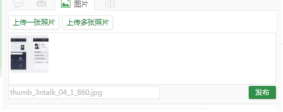
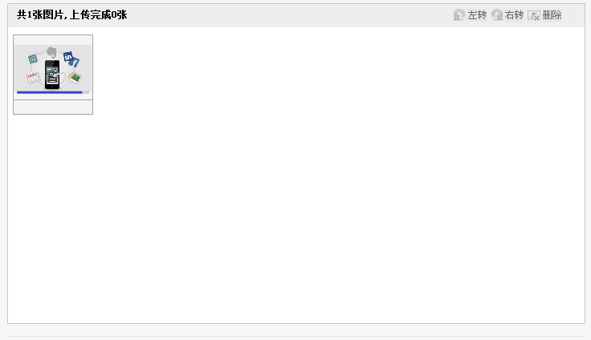

flash播放器要考虑的交互：
流畅:
加载较快，用户等待的缓冲时间较短（去除其他因素）。视频播发，不迟钝，不占有过多的cpu,不易引起浏览器崩溃
体积小:
插件文件体积小，页面加载快，尽量减少无关内容的
好用:
具体参考详细的插件
图标统一，整体，协调；标准皮肤，与页面风格搭配。以供设计师是参考、学习，自定义
标准的水印；为配合广告投入而进行的用户体验方面的统一调整和规范.
具体请参考: JS功能> 第三方插件
提供音乐的播放
图标统一，整体，协调；
标准皮肤，与页面风格搭配。
以供设计师是参考、学习，自定义
具体请参考: JS功能> 第三方插件
存储标准，压缩比例和标准
上传是一个复杂的过程，需要考虑较多环节。主要包含一下过程：1.文件选取（是、否、取消） 2.后台上传（进度）3.结束（成功，失败，是否继续上传）
 具体请参考: JS功能> 文件上传